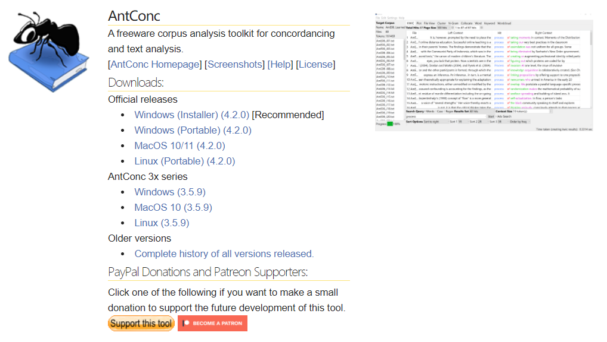

语料分析工具
返回首页
语料库
AntConc是一款免费的语料库检索工具，适用于语料库语言学、翻译学、外语教学等领域的研究者。该软件的开发者是Laurence Anthony，他是日本早稻田大学（Waseda University）教授。
UAM Corpus Tool是文本和图像语言标注的工具集，可由用户制定文档分析规则，以分析规则为标注层系标注文档。
点击下方文字或图片可跳转至相应官网，下载软件并查看使用方法。也可以在blibili网站查找视频教程。
AntConc

UAM Corpus Tool